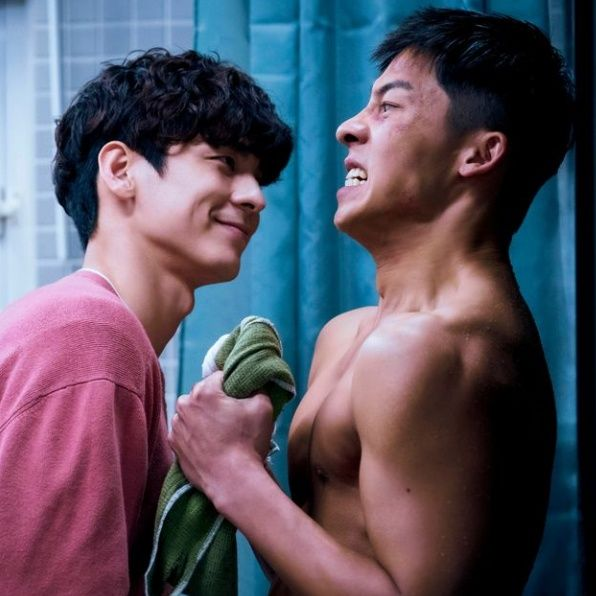
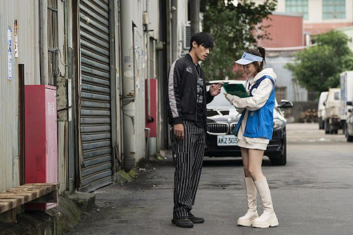
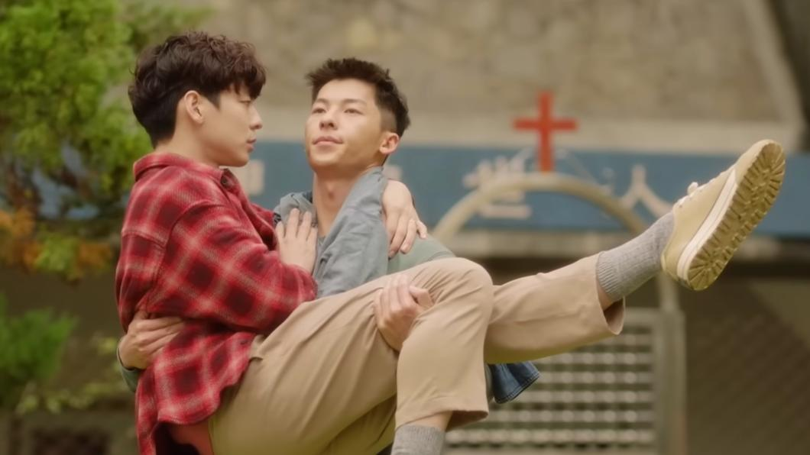

電影簡述
一位恐同的直男警察因一次辦案，在地上撿到紅包，意外與另一位同志亡者冥婚。亡者因車禍去世，凶手肇事逃逸，事發 路段的監控被離奇删除⋯⋯警察為了帮助他完成遺願，追查真凶，意外發現事故竟與開頭所辦的案子相關，两人由此發生了一段有趣的故事。同時，這個故事的背後，也講述了在不被社會認可的大背景下，同性戀的老一輩家人敏感又细腻的親情。
一位恐同的直男警察因一次辦案，在地上撿到紅包，意外與另一位同志亡者冥婚。亡者因車禍去世，凶手肇事逃逸，事發 路段的監控被離奇删除⋯⋯警察為了帮助他完成遺願，追查真凶，意外發現事故竟與開頭所辦的案子相關，两人由此發生了一段有趣的故事。同時，這個故事的背後，也講述了在不被社會認可的大背景下，同性戀的老一輩家人敏感又细腻的親情。
謝謝你 讓他知道什麼叫做無條件的愛如果有下輩子 他還想要做你的兒子

 
電影一開始的主題就是冥婚，是一種現在社會已經很少見的、很上不了檯面的一種迷信。而電影透過嬉鬧的方式，藉由看似嘲諷原本隱晦陰暗的宗教信仰，淡化成只是介紹即將消失的一項民俗文化活動。既不批判無稽，也不倡導迷信，詮釋手法相當詼諧。